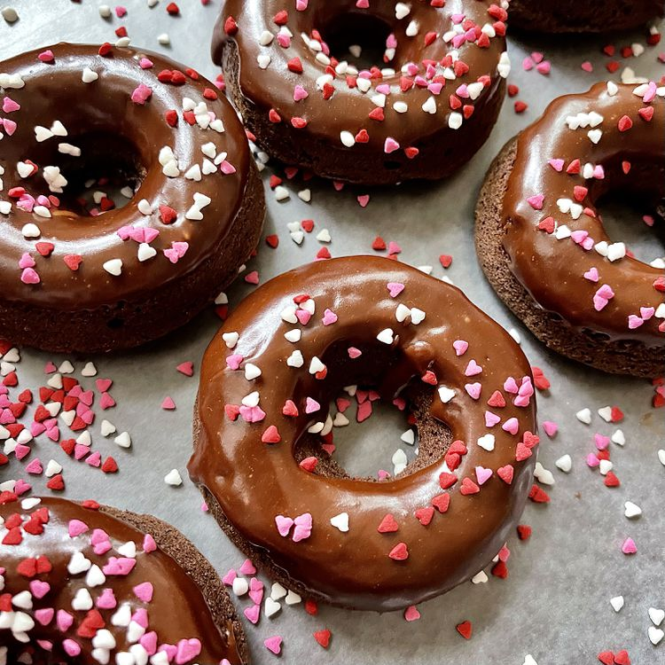

Glazed Chocolate Donuts

Description
These are yummy, glazed chocolate donuts without frying! My family loved
these! I don't fry anything, so was happy to find this recipe. You can
also sprinkle these with toppings after dipping into the glaze.
Ingredients
- cooking spray
- 2 cups all-purpose flour
- ¾ cup white sugar
- ½ cup unsweetened cocoa powder
- 1 teaspoon baking powder
- 1 teaspoon baking soda
- 1 teaspoon salt
- ¾ cup milk
- 2 tablespoons milk
- 2 egg
- 2 tablespoons unsalted butter, melted
- 1 teaspoon vanilla extract
Glaze:
- ¼ cup unsalted butter
- 1 tablespoon heavy cream
- 1 tablespoon milk
- 2 teaspoons corn syrup
- 1 teaspoon vanilla extract
- 1 ounce bittersweet chocolate, chopped
- 1 ounce semisweet chocolate chips
- 1 ¼ cups confectioners' sugar
Directions
-
Preheat the oven to 325 degrees F (165 degrees C). Coat 11 donut cups
with cooking spray.
-
Whisk flour, sugar, cocoa powder, baking powder, baking soda, and salt
together in a bowl. Beat in 3/4 cup plus 2 tablespoons milk, eggs, 2
tablespoons melted butter, and vanilla extract using an electric mixer
until well blended.
-
Pour batter into a resealable plastic bag; cut off 1 corner. Pour batter
into donut cups, filling each to about 3/4 full.
-
Bake in the preheated oven until a toothpick inserted into a donut comes
out clean, about 10 minutes. Cool slightly, 5 to 10 minutes.
-
Meanwhile, combine 1/4 cup butter, cream, milk, corn syrup, and vanilla
extract in a small saucepan over medium-low heat until butter is
completely melted, 2 to 3 minutes. Reduce heat to low; stir in
bittersweet and semisweet chocolate until melted, 2 to 3 minutes more.
Remove from heat, whisk in confectioners' sugar until combine
- Dip cooled donuts into glaze; cool and set, about 15 minutes.
Home